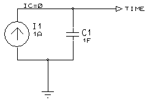

The arbitrary controlled voltage and current source models provide an extremely powerful modelling facility. The output of these devices is determined by a symbolic expression which can act upon any number of input voltages and currents.
The following devices in ASIMMDLS.LIB are based on these models:
AVCVS, AVCCS, ACCVS, ACCCS, SUMMER, MULTIPLIER.
The expression is entered into the value field of the device, or if more characters are required, you can use an explicit assignment to the VALUE property.
Voltage input values are referred to as V(A), V(B), V(C) etc. within the expression, these values referring to the voltages at pins named A, B, C. The form V(A,B) is also supported, this meaning the differential voltage between pins A and B.
Current input values are referred to as I(A,B) where this value represents the current flowing into pin A and out of pin B. Once a pair of pins are used for current measurement, they will have zero resistance between them.
The expression evaluation supports the following mathematical functions:
abs acos acosh asin asinh atan atanh cos
cosh exp limit ln log pwr pwrs sgn
sin sinh sqrt stp tan u uramp
The limit function takes three arguments and returns y for x<y, z for x>z and x otherwise. The pwr function takes two parameters and evaluates to |x | raised to the power of y whilst pwrs returns |x|^y for x >= 0 and -|x|^y for x < 0. These two functions are extensions to standard SPICE3F5 which we have added for better compatibility with PSPICE™.
The u or stp function is the unit step function, with a value of one for arguments greater than one and a value of zero for arguments less than zero. The function uramp is the integral of the unit step; uramp(x) returns a value of zero for x < 0 and x for x > 0. These functions can be used to synthesize piece-wise non-linear transfer functions, although convergence problems may arise at the switching points.
The following standard operators are supported:
+ - * / ^
The expression x^y raises x to the power of y and is an alternative to the pwr function.
If the argument to log, ln or sqrt becomes negative, the absolute value of the argument is used. If a divisor or argument to ln or log becomes zero, this is an error and the simulation will fail..
A value for time can be created by connecting a current source in parallel with a capacitor, and setting the initial condition to zero.

This ramp voltage can then be used inside sin, cos etc. to create FM generators, VCOs and many other functional models.
Note that the arbitrary controlled source primitives do not, of themselves, implement timestep control. This can lead to the simulator missing rapid ‘transitions’ of the output function. Two work-arounds exist:
We hope to implement proper timestep control for arbitrary sources in a future release, although these models use Berkeley’s code so it will be tricky modification to implement!
See Also